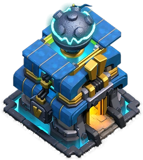

Simplify Townhall 12 attack

- Uncle Sam's strategy : I called it Uncle Sam strategy because it works with almost every base out there
- Drag Smash : This strategy is really strong against multiple infernos, but if there is single infernos we can still deploy steleton
spells to distract
- Blizzard Lava Loon : This strategy works with almost every base but multiple infernos can be a cause some issues since
the ballons have low HP, make sure you freeze up the infernos and use haze spells to speed up your ballons
- Mass Witch : This strategy is too powerful especially at townhall 12, but it works smoothly against single infernos. if there
are 3 multiple infernos it is not avisable to use this strategy.
- Super witch : This strategy is quite strong against multiple infernos, just make sure you deploy your troops at right
timing because it can time failed you as Super witch approach things very slowly.
- Hog-Miner Hybrid : This is one of the most underrated strategies in Clash of Clans, we can use Blimp, Flame Flinger and Siege barrack
to assist us for a perfect Hybrid attack
- Super Bowler : First we need to funnel one side with flame flinger then other side with grand warden and then deploy the super bowlers
to ripped apart the main defences
Recommend Attacking Strategies
| Multiple |
Single |
Drag Smash |
Bowiwi |
| Super Witch |
Mass Skelly |
| Super bowlers |
Hog-Miner Hybrid
|